엔트로피 전체25장 v143. 수업 목차

5. Part 1 엔트로피의 의미
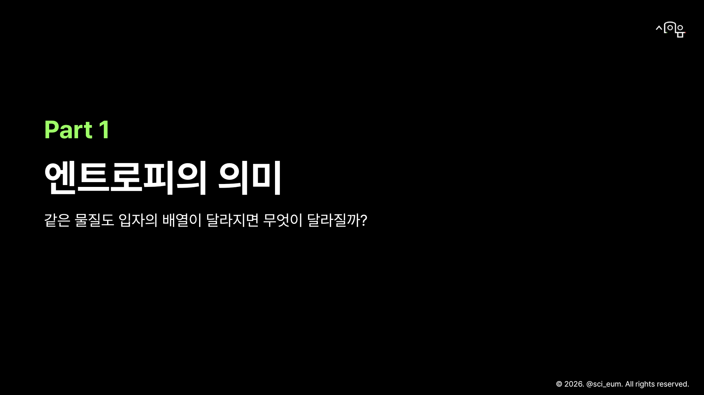
8. 비교 조건 — 같은 물질의 상태를 비교한다
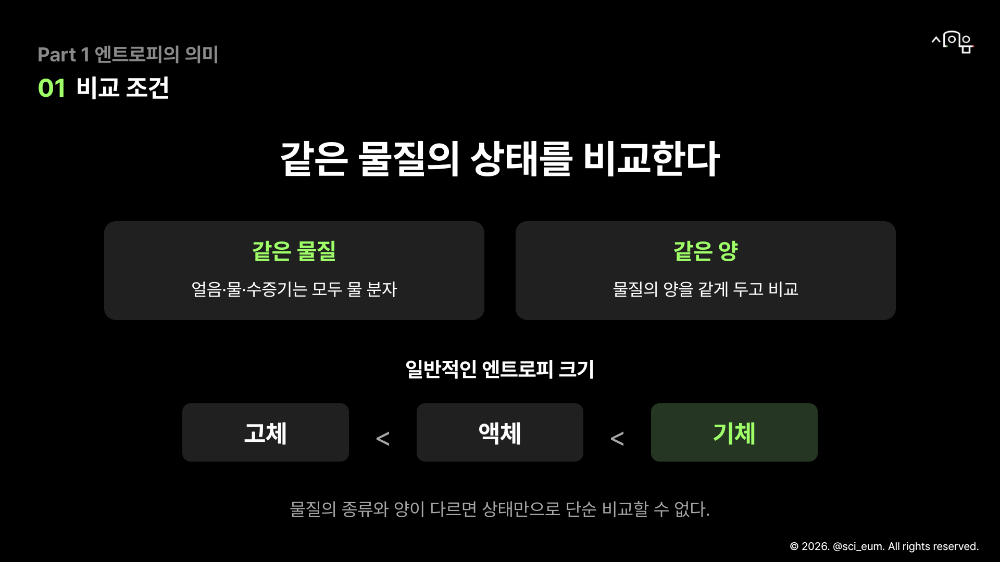
9. Part 2 엔트로피 변화
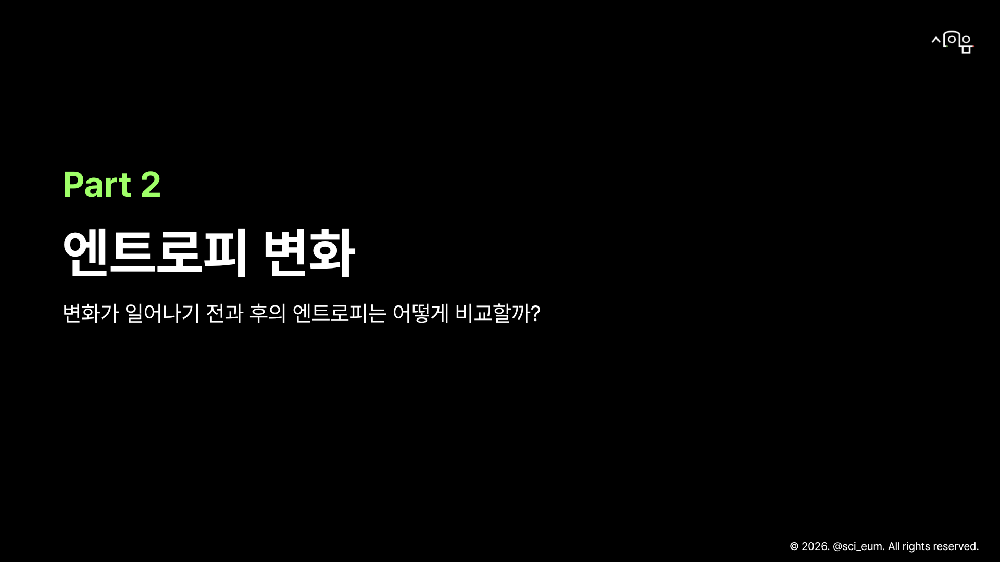
11. 변화의 부호 — 증가·감소를 부호로 읽는다
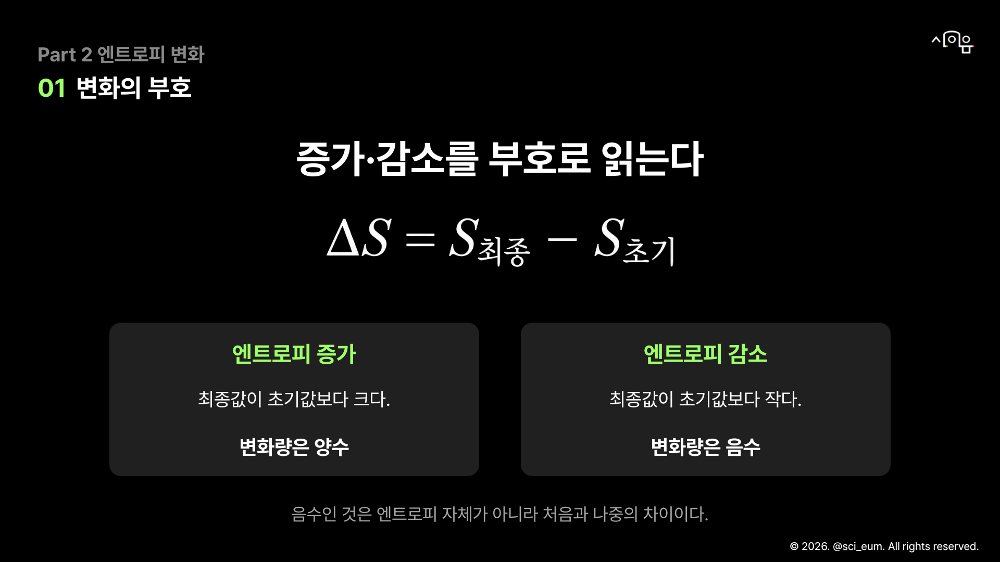
13. 상태 변화 — 변화의 방향이 바뀌면 결론도 바뀐다
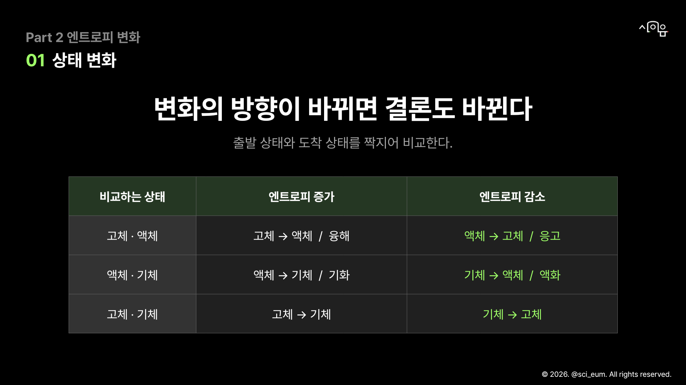
15. 기체 분자 수 — 반응식의 계수로 분자 수를 센다
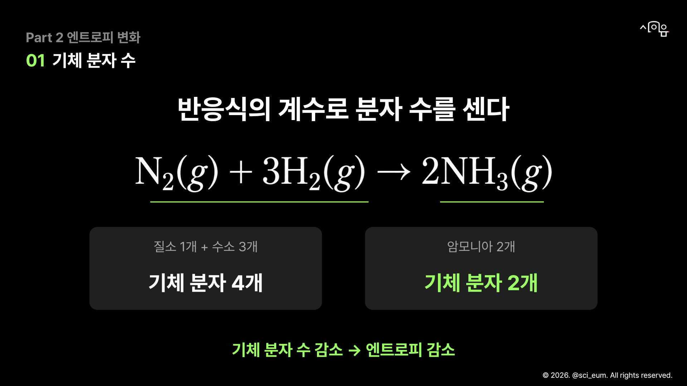
16. 기체 분자 수 — 분자 수가 줄어도 원자는 사라지지 않는다
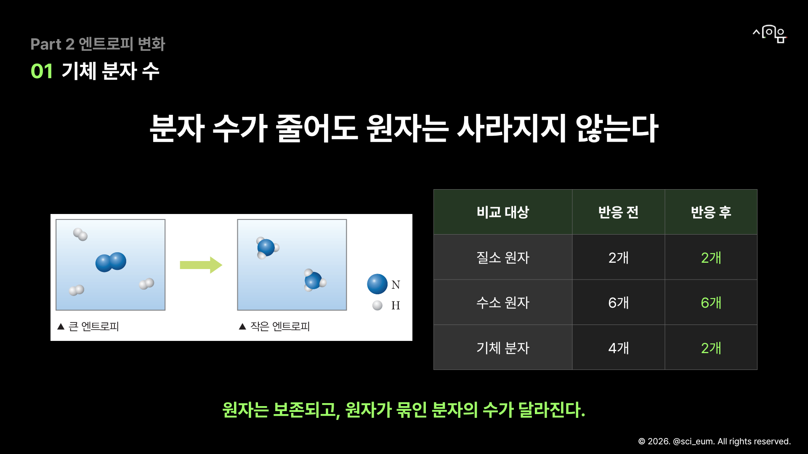
18. 기체의 혼합 — 혼합 전후에 달라진 것과 같은 것
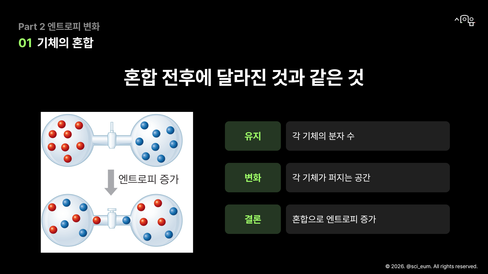
19. 엔트로피 변화 소정리
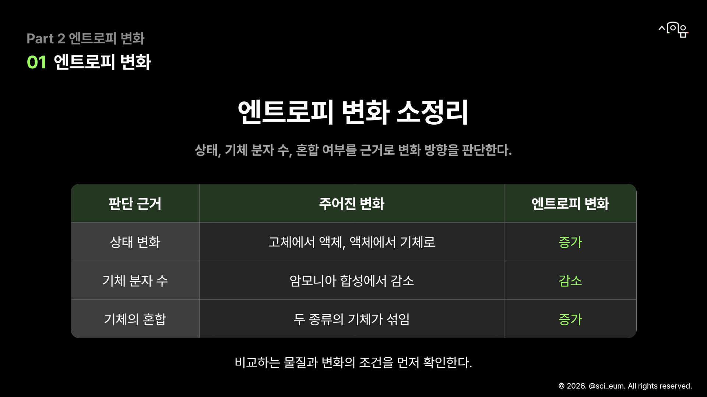
20. 향기가 퍼지는 까닭
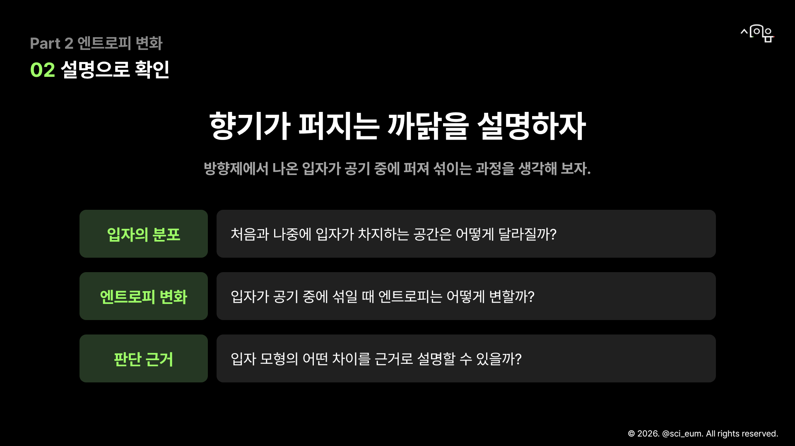
21. Part 3 엔트로피 변화의 적용
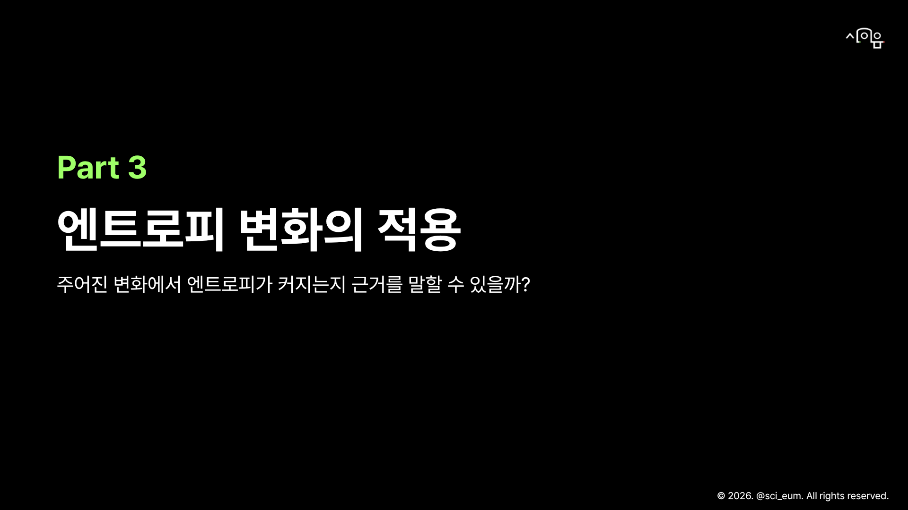
22. 수증기가 물이 되면
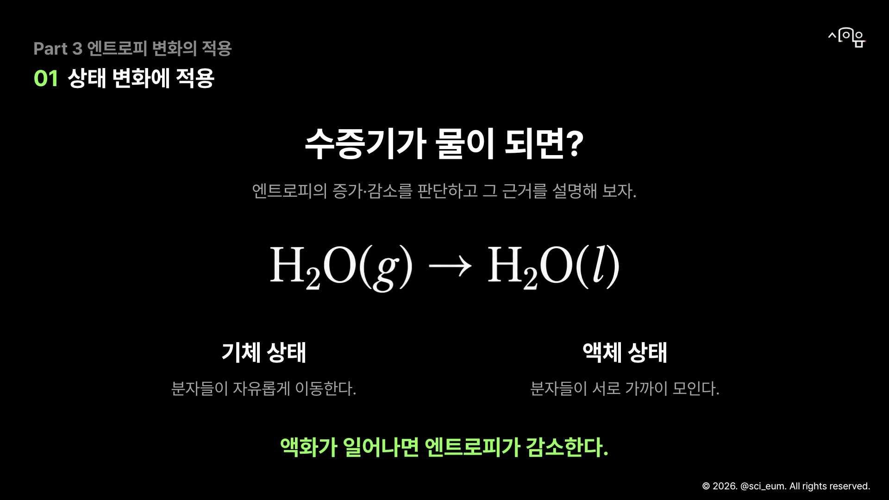
23. 일산화 질소가 산화되면
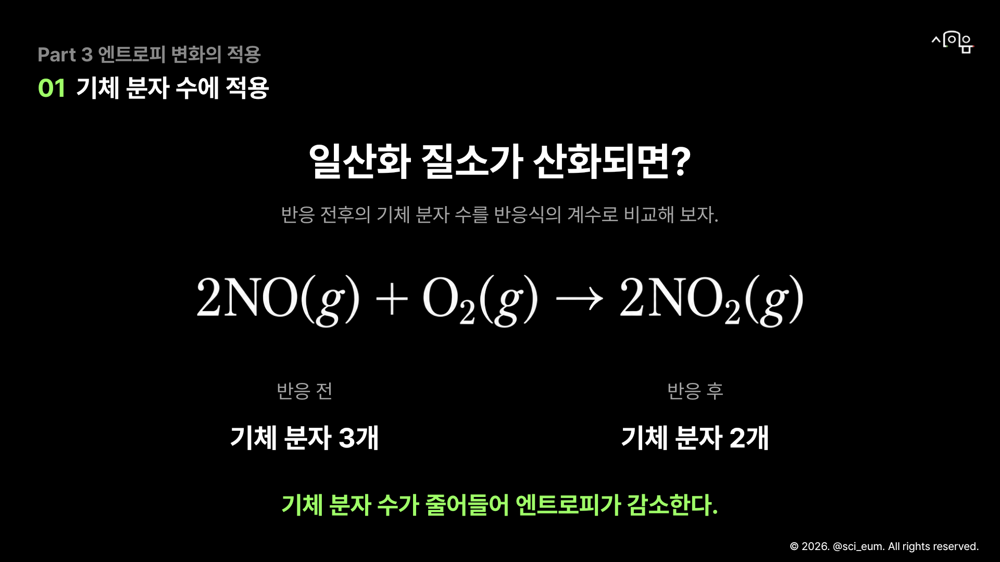
24. 오개념 확인 — 판단 근거를 고쳐 설명해 보자
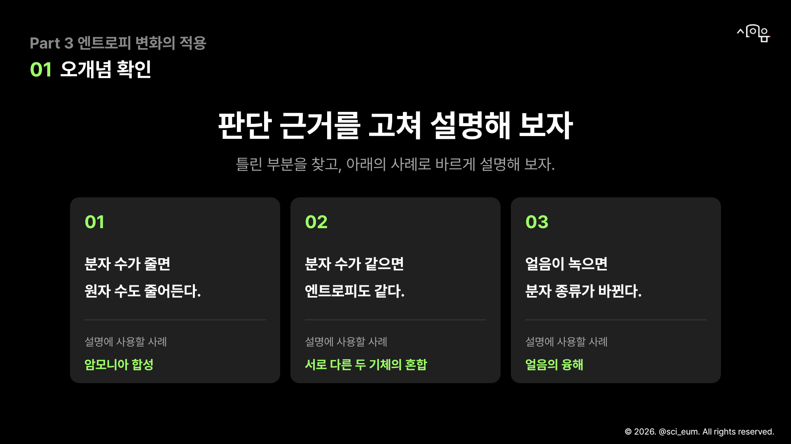